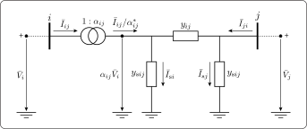
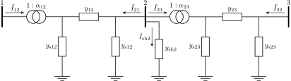
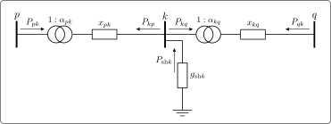

AC and DC Model
The power system analyses commonly utilize the unified branch model that provides linear relationships between voltages and currents. However, as the focus is on power calculations rather than current calculations, the resulting equations become nonlinear, posing challenges in solving them [1]. Hence, to accurately analyze power systems without any approximations, we use the AC model, which is a crucial component of our framework. In contrast, to obtain a linear system of equations for various DC analyses, we introduce approximations in the unified branch model, resulting in the DC model.
In this section, we not only describe the AC and DC models derived from the unified branch model but also furnish the power and current equations utilized in all JuliaGrid analyses.
A common way to describe the power system network topology is through the bus/branch model, which employs the two-port $\pi$-model, which results in the unified branch model. The bus/branch model can be represented by a graph denoted by $\mathcal{G} = (\mathcal{N}, \mathcal{E})$, where the set of nodes $\mathcal{N} = \{1, \dots, n\}$ corresponds to buses, and the set of edges $\mathcal{E} \subseteq \mathcal{N} \times \mathcal{N}$ represents the branches of the power network.
Let us now construct the power system:
@power(MW, MVAr, MVA)
@voltage(pu, deg, V)
system = powerSystem()
addBus!(system; label = 1, type = 3)
addBus!(system; label = 2, type = 1, active = 21.7, reactive = 12.7)
addBus!(system; label = 3, type = 2, conductance = 2.1, susceptance = 1.2)
addBranch!(system; from = 1, to = 2, resistance = 0.02, reactance = 0.06, susceptance = 0.05)
addBranch!(system; from = 2, to = 3, reactance = 0.21, turnsRatio = 0.98, shiftAngle = 1.2)
addGenerator!(system; bus = 1, active = 40.0, reactive = 42.4)The given example provides the set of buses $\mathcal{N}$ and the set of branches $\mathcal{E}$:
julia> 𝒩 = collect(keys(sort(system.bus.label)))3-element Vector{String}: "1" "2" "3"julia> ℰ = [𝒩[system.branch.layout.from] 𝒩[system.branch.layout.to]]2×2 Matrix{String}: "1" "2" "2" "3"
In this section, when referring to a vector $\mathbf{a}$, we use the notation $\mathbf{a} = [a_{ij}]$, where $a_{ij}$ represents the generic element associated with the branch $(i,j) \in \mathcal{E}$.
AC Model
JuliaGrid is based on common network elements and benefits from the unified branch model to perform various analyses based on the system of nonlinear equations. To generate matrices and vectors for AC or nonlinear analysis, JuliaGrid employs the acModel! function. To demonstrate the usage of this function, consider the power system defined in the previous example. In order to apply the acModel! function to this power system, the following code can be executed:
acModel!(system)Unified Branch Model
The equivalent unified $\pi$-model for a branch $(i,j) \in \mathcal{E}$ incident to the buses $\{i,j\} \in \mathcal{N}$ is shown in Figure 1.
The directions of the currents $\bar{I}_{ij}$, $\bar{I}_{ji}$, $\bar{I}_{\text{s}i}$, and $\bar{I}_{\text{s}j}$ are vital for power flow analysis. Positive power aligns with the assumed current direction, moving away from the bus, while negative power implies a reverse flow towards the bus. JuliaGrid consistently uses these directions, along with $\bar{I}_{\text{l}ij}$, for power and current calculations.
The branch series admittance $y_{ij}$ is inversely proportional to the branch series impedance $z_{ij}$:
\[ y_{ij} = \frac{1}{z_{ij}} = \frac{1}{{r_{ij}} + \text{j}x_{ij}} = \frac{r_{ij}}{r_{ij}^2 + x_{ij}^2} - \text{j}\frac{x_{ij}}{r_{ij}^2 + x_{ij}^2} = g_{ij} + \text{j}b_{ij},\]
where $r_{ij}$ is a resistance, $x_{ij}$ is a reactance, $g_{ij}$ is a conductance and $b_{ij}$ is a susceptance of the branch.
The vectors of resistances, denoted by $\mathbf{r} = [r_{ij}]$, and reactances, denoted by $\mathbf{x} = [x_{ij}]$, are stored in the variables:
julia> 𝐫 = system.branch.parameter.resistance2-element Vector{Float64}: 0.02 0.0julia> 𝐱 = system.branch.parameter.reactance2-element Vector{Float64}: 0.06 0.21
Moreover, the ac field stores the computed vector of branch series admittances $\mathbf{y} = [y_{ij}]$:
julia> 𝐲 = system.model.ac.admittance2-element Vector{ComplexF64}: 5.000000000000001 - 15.0im 0.0 - 4.761904761904762im
The branch shunt admittance $y_{\text{s}ij}$ is equal to:
\[y_{\text{s}ij} = g_{\text{s}ij} + \text{j} b_{\text{s}ij},\]
where $g_{\text{s}ij}$ represents the shunt conductance of the branch, and $b_{\text{s}ij}$ represents the shunt susceptance. Both of these values are positive for real line sections. It is worth noting that while the shunt conductance $g_{\text{s}ij}$ is often insignificantly small and can be ignored in many cases, it is included in the analyses to ensure comprehensive consideration of all potential scenarios.
Within JuliaGrid, the total shunt conductances and susceptances of branches are stored. In order to obtain the vectors $\mathbf{g}_\text{s} = [g_{\text{s}ij}]$ and $\mathbf{b}_\text{s} = [b_{\text{s}ij}]$, the conductances and susceptances must be distributed by considering the ends of the branches:
julia> 𝐠ₛ = 0.5 * system.branch.parameter.conductance2-element Vector{Float64}: 0.0 0.0julia> 𝐛ₛ = 0.5 * system.branch.parameter.susceptance2-element Vector{Float64}: 0.025 0.0
The transformer complex ratio $\alpha_{ij}$ is defined:
\[ \alpha_{ij} = \cfrac{1}{\tau_{ij}}e^{-\text{j}\phi_{ij}},\]
where $\tau_{ij} \neq 0$ is a transformer turns ratio, while $\phi_{ij}$ is a transformer phase shift angle, always located "from" bus end of the branch. Note, if $\tau_{ij} = 1$ and $\phi_{ij} = 0$ the model describes the line. In-phase transformers are defined if $\tau_{ij} \neq 1$, $\phi_{ij} = 0$, and $y_{\text{s}ij} = 0$, while phase-shifting transformers are obtained if $\tau_{ij} \neq 1$, $\phi_{ij} \neq 0$, and $y_{\text{s}ij} = 0$.
These transformer parameters are stored in the vectors $\bm{\tau} = [\tau_{ij}]$ and $\bm{\phi} = [\phi_{ij}]$, respectively:
julia> 𝛕 = system.branch.parameter.turnsRatio2-element Vector{Float64}: 1.0 0.98julia> 𝚽 = system.branch.parameter.shiftAngle2-element Vector{Float64}: 0.0 0.020943951023931952
Branch Shunt Elements
The currents flowing through shunt admittances denoted as $y_{\text{s}ij}$ are defined as follows:
\[ \begin{aligned} \bar{I}_{\text{s}i} &= \alpha_{ij} y_{\text{s}ij}\bar{V}_{i},\;\;\; (i,j) \in \mathcal{E} \\ \bar{I}_{\text{s}j} &= y_{\text{s}ij}\bar{V}_{j},\;\;\; (i,j) \in \mathcal{E}. \end{aligned}\]
With these specified currents in place, it becomes straightforward to compute both the total active and reactive power that branch shunt elements demand and inject concerning the power system. This can be expressed as follows:
\[ S_{\text{s}ij} = P_{\text{s}ij} + \text{j} Q_{\text{s}ij} = \alpha_{ij} \bar{V}_{i} \bar{I}_{\text{s}i}^* + \bar{V}_{j} \bar{I}_{\text{s}j}^* = y_{\text{s}ij}^*(\alpha_{ij}^2 {V}_{i}^2 + {V}_{j}^2),\;\;\; (i,j) \in \mathcal{E}.\]
For real branch sections, the reactive power is negative, $Q_{\text{s}ij}$, signifying that the branch injects reactive power due to its capacitive nature. The negative sign implies that the power flow direction opposes the assumed direction set by the currents $\bar{I}_{\text{s}i}$ and $\bar{I}_{\text{s}j}$. Additionally, the active power, $P_{\text{s}ij}$ represents active losses within the branch shunt admittances.
Branch Series Element
The current flowing through a series admittance, denoted as $y_{ij}$, is defined as follows:
\[ \bar{I}_{\text{l}ij} = \alpha_{ij} y_{ij}\bar{V}_{i} - y_{ij}\bar{V}_{i},\;\;\; (i,j) \in \mathcal{E}.\]
Consequently, the active and reactive power associated with the branch series element are as follows:
\[ S_{\text{l}ij} = P_{\text{l}ij} + \text{j} Q_{\text{l}ij} = (\alpha_{ij} \bar{V}_{i} - \bar{V}_{j}) \bar{I}_{\text{l}ij}^* = y_{ij}^* (\alpha_{ij} \bar{V}_{i} - \bar{V}_{j}) (\alpha_{ij} \bar{V}_{i} - \bar{V}_{j})^* ,\;\;\; (i,j) \in \mathcal{E}.\]
The active power accounts for losses originating from the series resistance $r_{ij}$ of the branch, while the reactive power represents losses resulting from the inductive characteristics of the impedance defined by series reactance $x_{ij}$. This can be observed when the reactive power is positive $Q_{\text{l}ij} > 0$.
Branch Network Equations
Using Kirchhoff's circuit laws, the branch model can be described by complex expressions:
\[ \begin{bmatrix} \bar{I}_{ij} \\ \bar{I}_{ji} \end{bmatrix} = \begin{bmatrix} \cfrac{1}{\tau_{ij}^2}({y}_{ij} + y_{\text{s}ij}) & -\alpha_{ij}^*{y}_{ij}\\ -\alpha_{ij}{y}_{ij} & {y}_{ij} + y_{\text{s}ij} \end{bmatrix} \begin{bmatrix} \bar{V}_{i} \\ \bar{V}_{j} \end{bmatrix}.\]
The admittance parameters are stored in the vectors $\mathbf{y}_{\text{ii}} = [({y}_{ij} + y_{\text{s}ij}) / \tau_{ij}^2]$, $\mathbf{y}_{\text{ij}} = [-\alpha_{ij}^*{y}_{ij}]$, $\mathbf{y}_{\text{ji}} = [-\alpha_{ij}{y}_{ij}]$, and $\mathbf{y}_{\text{jj}} = [{y}_{ij} + y_{\text{s}ij}]$ and can be found in the variables:
julia> 𝐲ᵢᵢ = system.model.ac.nodalFromFrom2-element Vector{ComplexF64}: 5.000000000000001 - 14.975im 0.0 - 4.958251522183217imjulia> 𝐲ᵢⱼ = system.model.ac.nodalFromTo2-element Vector{ComplexF64}: -5.000000000000001 + 15.0im -0.10176102955955761 + 4.858020813774759imjulia> 𝐲ⱼᵢ = system.model.ac.nodalToFrom2-element Vector{ComplexF64}: -5.000000000000001 + 15.0im 0.10176102955955761 + 4.858020813774759imjulia> 𝐲ⱼⱼ = system.model.ac.nodalToTo2-element Vector{ComplexF64}: 5.000000000000001 - 14.975im 0.0 - 4.761904761904762im
In this context, we have easily derived the active and reactive power flow at the "from" bus end, denoted as $i \in \mathcal{N}$, of the branch $(i,j) \in \mathcal{E}$:
\[ S_{ij} = P_{ij} + \text{j}Q_{ij} = \bar{V}_{i}\left[\cfrac{1}{\tau_{ij}^2}({y}_{ij} + y_{\text{s}ij}) \bar{V}_{i} - \alpha_{ij}^*{y}_{ij} \bar{V}_{j}\right]^*,\;\;\; (i,j) \in \mathcal{E}.\]
Similarly, we can determine the active and reactive power flow at the "to" bus end, denoted as $j \in \mathcal{N}$, of the branch $(i,j) \in \mathcal{E}$:
\[ {S}_{ji} = P_{ji} + \text{j}Q_{ji} = \bar{V}_{j} \left[-\alpha_{ij}{y}_{ij} \bar{V}_{i} + ({y}_{ij} + y_{\text{s}ij}) \bar{V}_{j}\right]^*,\;\;\; (i,j) \in \mathcal{E}.\]
Positive values of active or reactive power, such as $P_{ij} > 0$ or $Q_{ij} > 0$, indicate power flow originating from the "from" bus and moving towards the "to" bus, following the direction of the current $\bar{I}_{ij}$. Conversely, negative values, like $P_{ij} < 0$ or $Q_{ij} < 0$, signify power flow in the opposite direction. The same principles apply to $P_{ji} > 0$ or $Q_{ji} > 0$, indicating power flow from the "to" bus to the "from" bus, aligned with the current $\bar{I}_{ji}$, while negative values, $P_{ji} < 0$ or $Q_{ji} < 0$, denote the reverse flow direction.
Nodal Network Equations
Let us consider an illustrative example from our case study, depicted in Figure 2. This example provides a smooth transition to the general case, demonstrating a system with three buses represented as $\mathcal{N} = \{1, 2, 3\}$ and two branches $\mathcal{E} = \{(1, 2), (2, 3)\}$, where bus $2$ is incident to the shunt element with admittance ${y}_{\text{sh}2}$.
The current $\bar{I}_{\text{sh}2}$ follows the convention of coming out from the bus in terms of its direction. When calculating powers related to shunt elements, this current direction is assumed. Therefore, in cases where power is positive, it signifies alignment with the assumed current direction, emerging away from the bus. Conversely, when power is negative, the direction is reversed, indicating a flow towards the bus.
According to the Branch Network Equations each branch is described using the system of equations as follows:
\[ \begin{bmatrix} \bar{I}_{12} \\ \bar{I}_{21} \end{bmatrix} = \begin{bmatrix} \cfrac{1}{\tau_{12}^2}({y}_{12} + y_{\text{s}12}) & -\alpha_{12}^*{y}_{12}\\ -\alpha_{12}{y}_{12} & {y}_{12} + y_{\text{s}12} \end{bmatrix} \begin{bmatrix} \bar{V}_{1} \\ \bar{V}_{2} \end{bmatrix}\]
\[ \begin{bmatrix} \bar{I}_{23} \\ \bar{I}_{32} \end{bmatrix} = \begin{bmatrix} \cfrac{1}{\tau_{23}^2}({y}_{23} + y_{\text{s}23}) & -\alpha_{23}^*{y}_{23}\\ -\alpha_{23}{y}_{23} & {y}_{23} + y_{\text{s}23} \end{bmatrix} \begin{bmatrix} \bar{V}_{2} \\ \bar{V}_{3} \end{bmatrix}.\]
The complex current injections at buses are:
\[ \begin{aligned} \bar{I}_{1} &= \bar{I}_{12} = \cfrac{1}{\tau_{12}^2}({y}_{12} + y_{\text{s}12}) \bar{V}_{1} -\alpha_{12}^*{y}_{12} \bar{V}_{2} \\ \bar{I}_{2} &= \bar{I}_{21} + \bar{I}_{23} + \bar{I}_{\text{sh}2} = -\alpha_{12}{y}_{12} \bar{V}_{1} + ({y}_{12} + y_{\text{s}12}) \bar{V}_{2} + \cfrac{1}{\tau_{23}^2}({y}_{23} + y_{\text{s}23}) \bar{V}_{2} -\alpha_{23}^*{y}_{23} \bar{V}_{3} + {y}_{\text{sh}2} \bar{V}_2 \\ \bar{I}_{3} &= \bar{I}_{32} = -\alpha_{23}{y}_{23} \bar{V}_{2} + ({y}_{23} + y_{\text{s}23}) \bar{V}_{3}. \end{aligned}\]
The system of equations can be written in the matrix form:
\[ \begin{bmatrix} \bar{I}_{1} \\ \bar{I}_{2} \\ \bar{I}_{3} \end{bmatrix} = \begin{bmatrix} \cfrac{1}{\tau_{12}^2}({y}_{12} + y_{\text{s}12}) & -\alpha_{12}^*{y}_{12} & 0 \\ -\alpha_{12}{y}_{12} & {y}_{12} + y_{\text{s}12} + \cfrac{1}{\tau_{23}^2}({y}_{23} + y_{\text{s}23}) + {y}_{\text{sh}2} & -\alpha_{23}^*{y}_{23} \\ 0 & -\alpha_{23}{y}_{23} & {y}_{23} + y_{\text{s}23} \end{bmatrix} \begin{bmatrix} \bar{V}_{1} \\ \bar{V}_{2} \\ \bar{V}_{3} \end{bmatrix}.\]
Next, the system of equations for buses $i=1, \dots, n$ can be written in the matrix form:
\[ \mathbf {\bar {I}} = \mathbf{Y} \mathbf {\bar {V}},\]
where $\mathbf {\bar {V}} \in \mathbb{C}^{n}$ is the vector of bus complex voltages, and $\mathbf {\bar {I}} \in \mathbb{C}^{n}$ is the vector of complex current injections at buses.
The matrix $\mathbf{Y} = \mathbf{G} + \text{j}\mathbf{B} \in \mathbb{C}^{n \times n}$ is the bus or nodal admittance matrix, with elements:
- the diagonal elements, where $i \in \mathcal{N}$, are equal to:
\[Y_{ii} = G_{ii} + \text{j}B_{ii} = {y}_{\text{sh}i} + \sum\limits_{e \in \mathcal{E}, \; e(1) = i} \cfrac{1}{\tau_{ij}^2}({y}_{ij} + y_{\text{s}ij}) + \sum\limits_{e \in \mathcal{E}, \; e(2) = i} ({y}_{ji} + y_{\text{s}ji}),\]
- the non-diagonal elements, where $i = e(1),\; j = e(2), \; e \in \mathcal{E}$, are equal to:
\[Y_{ij} = G_{ij} + \text{j}B_{ij} = -\alpha_{ij}^*{y}_{ij}\]
\[Y_{ji} = G_{ji} + \text{j}B_{ji} = -\alpha_{ij}{y}_{ij}.\]
When a branch is not incident (or adjacent) to a bus the corresponding element in the nodal admittance matrix $\mathbf{Y}$ is equal to zero. The nodal admittance matrix $\mathbf{Y}$ is a sparse (i.e., a small number of elements are non-zeros) for real-world power systems. Although it is often assumed that the matrix $\mathbf{Y}$ is symmetrical, it is not a general case, for example, in the presence of phase shifting transformers the matrix $\mathbf{Y}$ is not symmetrical [2, Sec. 9.6]. JuliaGrid stores both the matrix $\mathbf{Y}$ and its transpose $\mathbf{Y}^T$ in the ac field of the PowerSystem composite type:
julia> 𝐘 = system.model.ac.nodalMatrix3×3 SparseArrays.SparseMatrixCSC{ComplexF64, Int64} with 7 stored entries: 5.0-14.975im -5.0+15.0im ⋅ -5.0+15.0im 5.0-19.9333im -0.101761+4.85802im ⋅ 0.101761+4.85802im 0.021-4.7499imjulia> 𝐘ᵀ = system.model.ac.nodalMatrixTranspose3×3 SparseArrays.SparseMatrixCSC{ComplexF64, Int64} with 7 stored entries: 5.0-14.975im -5.0+15.0im ⋅ -5.0+15.0im 5.0-19.9333im 0.101761+4.85802im ⋅ -0.101761+4.85802im 0.021-4.7499im
Bus Injections
From the previous analysis, we can determine the complex current injection at each bus as follows:
\[ \bar{I}_{i} = \sum\limits_{j = 1}^n {Y}_{ij} \bar{V}_{j},\;\;\; i \in \mathcal{N}.\]
Furthermore, the calculation of active and reactive power injection at each bus is expressed by the following equation:
\[ {S}_{i} = P_i + \text{j}Q_i = \bar{V}_{i}\sum\limits_{j = 1}^n {Y}_{ij}^* \bar{V}_{j}^*,\;\;\; i \in \mathcal{N}.\]
When the values of active or reactive power are positive, $P_i > 0$ or $Q_i > 0$, it indicates that the bus is supplying power into the power system. Conversely, negative values, $P_i < 0$ or $Q_i < 0$, suggest that the bus is drawing active or reactive power from the power system.
Bus Shunt Element
In conclusion, based on the previous analysis, we can determine the active and reactive power at the shunt element of each bus using the following equation:
\[ {S}_{\text{sh}i} = {P}_{\text{sh}i} + \text{j}{Q}_{\text{sh}i} = \bar{V}_{i}\bar{I}_{\text{sh}i}^* = {y}_{\text{sh}i}^*{V}_{i}^2,\;\;\; i \in \mathcal{N}.\]
The positive active power value ${P}_{\text{sh}i} > 0$ indicates that the shunt element is consuming active power. In terms of power flow, this signifies that active power flows from bus $i \in \mathcal{N}$ towards the ground. On the other hand, a negative reactive power value ${Q}_{\text{sh}i} < 0$ suggests that the shunt element is injecting reactive power into the power system. This implies that the direction of reactive power is from the ground to bus $i \in \mathcal{N}$, illustrating the capacitive nature of the shunt component. Conversely, if ${Q}_{\text{sh}i} > 0$, it indicates an inductive characteristic, implying that the shunt component is absorbing reactive power. In this case, the reactive power flows from bus $i \in \mathcal{N}$ towards the ground.
DC Model
The DC model is obtained by linearisation of the nonlinear model, and it provides an approximate solution. In the typical operating conditions, the difference of bus voltage angles between adjacent buses $(i,j) \in \mathcal{E}$ is very small $\theta_{i}-\theta_{j} \approx 0$, which implies $\cos \theta_{ij}\approx 1$ and $\sin \theta_{ij} \approx \theta_{ij}$. Further, all bus voltage magnitudes are $V_i \approx 1$, $i \in \mathcal{N}$, and all branch shunt admittances and branch resistances can be neglected. This implies that the DC model ignores the reactive powers and transmission losses and takes into account only the active powers. Therefore, the DC power flow takes only bus voltage angles $\bm \theta$ as variables. To create vectors and matrices related to DC or linear analyses, JuliaGrid uses the function dcModel!. Therefore, we can continue with the previous example:
dcModel!(system)Branch Network Equations
According to the above assumptions, we start from the Unified Branch Model:
\[ \begin{bmatrix} \bar{I}_{ij} \\ \bar{I}_{ji} \end{bmatrix} = \cfrac{1}{\text{j}x_{ij}} \begin{bmatrix} \cfrac{1}{\tau_{ij}^2} && -\alpha_{ij}^*\\ -\alpha_{ij} && 1 \end{bmatrix} \begin{bmatrix} \bar{V}_{i} \\ \bar{V}_{j} \end{bmatrix},\]
where $\bar{V}_{i} = \text{e}^{\text{j}\theta_{i}}$ and $\bar{V}_{j} = \text{e}^{\text{j}\theta_{j}}$. Further, we have:
\[ \begin{aligned} \bar{I}_{ij} &= \cfrac{1}{\text{j}x_{ij}} \left[\cfrac{1}{\tau_{ij}^2} \text{e}^{\text{j}\theta_{i}} - \cfrac{1}{\tau_{ij}}\text{e}^{\text{j}(\phi_{ij} + \theta_j)} \right] \\ \bar{I}_{ji} &= \cfrac{1}{\text{j}x_{ij}} \left[-\cfrac{1}{\tau_{ij}}\text{e}^{\text{j}(\theta_i - \phi_{ij})} + \text{e}^{\text{j}\theta_{j}} \right]. \end{aligned}\]
The active power flows are derived as follows:
\[ \begin{aligned} P_{ij} &= \Re\{\bar{V}_{i}\bar{I}_{ij}^*\} = \Re \left\{\text{j}\cfrac{1}{x_{ij}} \left[\cfrac{1}{\tau_{ij}^2} - \cfrac{1}{\tau_{ij}}e^{\text{j}(\theta_i - \theta_j - \phi_{ij})} \right] \right\} \\ P_{ji} &= \Re\{\bar{V}_{j}\bar{I}_{ji}^*\} = \Re \left\{\text{j}\cfrac{1}{x_{ij}} \left[1-\cfrac{1}{\tau_{ij}}e^{\text{j}(-\theta_i +\theta_j + \phi_{ij})} \right] \right\}. \end{aligned}\]
The real components are:
\[ \begin{aligned} P_{ij} &=\cfrac{1}{\tau_{ij}x_{ij}} \sin(\theta_{i} -\theta_{j}-\phi_{ij}) \approx \cfrac{1}{\tau_{ij} x_{ij}} (\theta_{i} -\theta_{j}-\phi_{ij}) \\ P_{ji} &=\cfrac{1}{\tau_{ij}x_{ij}} \sin(\theta_{j} -\theta_{i}+\phi_{ij}) \approx -\cfrac{1}{\tau_{ij} x_{ij}} (\theta_{i} - \theta_{j}-\phi_{ij}), \end{aligned}\]
where ${1}/({\tau_{ij} x_{ij}})$ represents the branch admittance in the DC framework. To recall, the PowerSystem composite type stores the reactances as vector $\mathbf{x} = [x_{ij}]$ in the variable:
julia> 𝐱 = system.branch.parameter.reactance2-element Vector{Float64}: 0.06 0.21
Furthermore, the computed branch admittances in the DC framework are stored in the vector $\mathbf{y} = [{1}/({\tau_{ij} x_{ij}})]$:
julia> 𝐲 = system.model.dc.admittance2-element Vector{Float64}: 16.666666666666668 4.8590864917395535
We can conclude that $P_{ij}=-P_{ji}$ holds. With the DC model, the linear network equations relate active powers to bus voltage angles, versus complex currents to complex bus voltages in the AC model [3]. Consequently, analogous to the Branch Network Equations we can write:
\[ \begin{bmatrix} P_{ij} \\ P_{ji} \end{bmatrix} = \cfrac{1}{\tau_{ij}x_{ij}} \begin{bmatrix} 1 && -1\\ -1 && 1 \end{bmatrix} \begin{bmatrix} \theta_{i} \\ \theta_{j} \end{bmatrix} + \cfrac{\phi_{ij}}{\tau_{ij}x_{ij}} \begin{bmatrix} -1 \\ 1 \end{bmatrix}.\]
Nodal Network Equations
As before, let us consider an illustrative example from our case study, depicted in Figure 3. This example provides a smooth transition to the general case, demonstrating a system with three buses represented as $\mathcal{N} = \{1, 2, 3\}$ and two branches $\mathcal{E} = \{(1, 2), (2, 3)\}$, where bus $2$ is incident to the shunt element with admittance ${g}_{\text{sh}2}$.
Each branch in the DC framework is described with a system of equations as follows:
\[ \begin{bmatrix} P_{12} \\ P_{21} \end{bmatrix} = \cfrac{1}{\tau_{12}x_{12}} \begin{bmatrix} 1 && -1\\ -1 && 1 \end{bmatrix} \begin{bmatrix} \theta_{1} \\ \theta_{2} \end{bmatrix} + \cfrac{\phi_{12}}{\tau_{12}x_{12}} \begin{bmatrix} -1 \\ 1 \end{bmatrix}\]
\[ \begin{bmatrix} P_{23} \\ P_{32} \end{bmatrix} = \cfrac{1}{\tau_{23}x_{23}} \begin{bmatrix} 1 && -1\\ -1 && 1 \end{bmatrix} \begin{bmatrix} \theta_{2} \\ \theta_{3} \end{bmatrix} + \cfrac{\phi_{23}}{\tau_{23}x_{23}} \begin{bmatrix} -1 \\ 1 \end{bmatrix}.\]
The active power injections at buses are:
\[ \begin{aligned} P_{1} &= P_{12} =\cfrac{1}{\tau_{12}x_{12}} \theta_{1} - \cfrac{1}{\tau_{12}x_{12}} \theta_{k} - \cfrac{\phi_{12}}{\tau_{12}x_{12}} \\ P_{2} &= P_{21} + P_{23} + P_{\text{sh}2} = -\cfrac{1}{\tau_{12}x_{12}} \theta_{1} + \cfrac{1}{\tau_{12}x_{12}} \theta_{2} + \cfrac{\phi_{12}}{\tau_{12}x_{12}} + \cfrac{1}{\tau_{23}x_{23}} \theta_{2} - \cfrac{1}{\tau_{23}x_{23}} \theta_{3} - \cfrac{\phi_{23}}{\tau_{23}x_{23}} + {g}_{\text{sh}2} \\ P_{3} &= {P}_{32} = -\cfrac{1}{\tau_{23}x_{23}} \theta_{2} +\cfrac{1}{\tau_{23}x_{23}} \theta_{3} + \cfrac{\phi_{23}}{\tau_{23}x_{23}}, \end{aligned}\]
where the active power injected by the shunt element at the bus $2$ is equal to:
\[ P_{\text{sh}2} = \Re\{\bar{V}_{2}\bar{I}_{\text{sh}2}^*\} = \Re\{\bar{V}_{2}{y}_{\text{sh}2}^*\bar{V}_{2}^*\} = V_2^2 {g}_{\text{sh}2} = {g}_{\text{sh}2}.\]
The system of equations can be written in the matrix form:
\[ \begin{bmatrix} P_{1} \\ P_{2} \\ P_{3} \end{bmatrix} = \begin{bmatrix} \cfrac{1}{\tau_{12}x_{12}} & - \cfrac{1}{\tau_{12}x_{12}} & 0 \\ -\cfrac{1}{\tau_{12}x_{12}} & \cfrac{1}{\tau_{12}x_{12}} + \cfrac{1}{\tau_{23}x_{23}} & -\cfrac{1}{\tau_{23}x_{23}} \\ 0 & -\cfrac{1}{\tau_{23}x_{23}} &\cfrac{1}{\tau_{23}x_{23}} \end{bmatrix} \begin{bmatrix} \theta_{1} \\ \theta_{2} \\ \theta_{3} \end{bmatrix} + \begin{bmatrix} - \cfrac{\phi_{12}}{\tau_{12}x_{12}} \\ \cfrac{\phi_{12}}{\tau_{12}x_{12}} - \cfrac{\phi_{23}}{\tau_{23}x_{23}} \\ \cfrac{\phi_{23}}{\tau_{23}x_{23}} \end{bmatrix} + \begin{bmatrix} 0 \\ {g}_{\text{sh}2} \\ 0 \end{bmatrix}.\]
Next, the system of equations for $i=1,\dots,n$ can be written in the matrix form:
\[ \mathbf {P} = \mathbf{B} \bm {\theta} + \mathbf{P_\text{tr}} + \mathbf{P}_\text{sh},\]
where $\bm \theta \in \mathbb{R}^{n}$ is the vector of bus voltage angles.
The vector $\mathbf {P} \in \mathbb{R}^{n}$ contains active power injections at buses caused by generators and demands. In JuliaGrid, the vector can be recovered using a command:
julia> 𝐏 = system.bus.supply.active - system.bus.demand.active3-element Vector{Float64}: 0.4 -0.217 0.0
The vector $\mathbf{P_\text{tr}} \in \mathbb{R}^{n}$ represents active powers related to the non-zero shift angle of transformers. This vector is stored in the dc field, and we can access it using:
julia> 𝐏ₜᵣ = system.model.dc.shiftPower3-element Vector{Float64}: 0.0 -0.10176846950404254 0.10176846950404254
The vector $\mathbf{P}_\text{sh} \in \mathbb{R}^{n}$ represents active powers consumed by shunt elements. We can access this vector using:
julia> 𝐏ₛₕ = system.bus.shunt.conductance3-element Vector{Float64}: 0.0 0.0 0.021
The bus or nodal matrix in the DC framework is given as $\mathbf{B} \in \mathbb{R}^{n \times n}$, with elements:
- the diagonal elements, where $i \in \mathcal{N}$, are equal to:
\[B_{ii} = \sum\limits_{e \in \mathcal{E},\; i \in e} \cfrac{1}{\tau_{ij}x_{ij}},\]
- the non-diagonal elements, where $i = e(1),\; j = e(2), \; e \in \mathcal{E}$, are equal to:
\[B_{ij} = -\cfrac{1}{\tau_{ij}x_{ij}}\]
\[B_{ji} = -\cfrac{1}{\tau_{ij}x_{ij}}.\]
The sparse nodal matrix $\mathbf{B}$ is stored in the dc field, and we can access it using:
julia> 𝐁 = system.model.dc.nodalMatrix3×3 SparseArrays.SparseMatrixCSC{Float64, Int64} with 7 stored entries: 16.6667 -16.6667 ⋅ -16.6667 21.5258 -4.85909 ⋅ -4.85909 4.85909
Bus Injection
From the previous analysis, the calculation of active power injection at each bus is expressed by the following equation:
\[ P_i = \sum_{j = 1}^n {B}_{ij} \theta_j + P_{\text{tr}i} + P_{\text{sh}i},\;\;\; i \in \mathcal{N}.\]
References
[1] G. Andersson, Power system analysis, EEH-Power Systems Laboratory, ETH Zurich, Lecture Notes 2012.
[2] J. Grainger and W. Stevenson, Power system analysis, ser. McGraw-Hill series in electrical and computer engineering: Power and energy. McGraw-Hill, 1994.
[3] R. D. Zimmerman, C. E. Murillo-Sanchez, MATPOWER User’s Manual, Version 7.0. 2019.